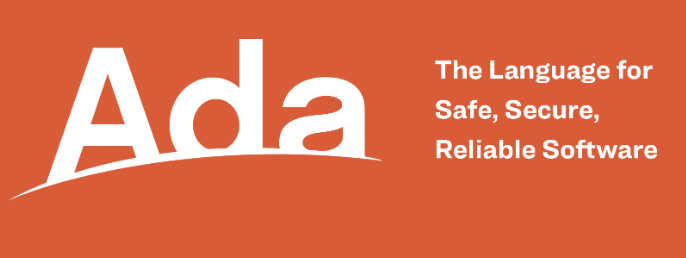
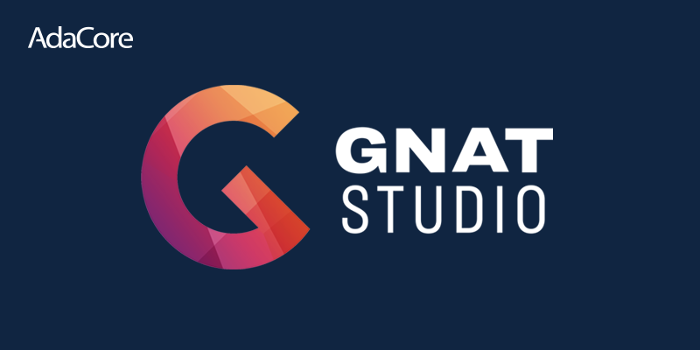

Lenguaje de programación Ada

El desarrollo del lenguaje de programación Ada comenzó en 1974, cuando el Ministerio de Defensa de los Estados Unidos llevó a cabo un estudio para encontrar una solución al problema de la diversidad de lenguajes de programación utilizados en sus sistemas. El objetivo era crear un único lenguaje estándar que permitiera mejorar la portabilidad, mantenibilidad y fiabilidad del software militar. El lenguaje fue oficialmente diseñado bajo encargo del Departamento de Defensa de los EE.UU. durante los años 1970.
Ada fue diseñado por Jean Ichbiah y su equipo de CII Honeywell Bull como parte de un concurso organizado por el Departamento de Defensa de los EE.UU.
El nombre "Ada" se eligió en honor a Augusta Ada Byron, conocida como Ada Lovelace, considerada la primera programadora de la historia. El lenguaje fue anunciado y patrocinado por el Departamento de Defensa de los EE.UU. en reconocimiento a su contribución pionera en computación.

Características principales del lenguaje
La sintaxis de Ada es clara y muy legible, similar a Pascal, e incluye palabras clave en inglés que facilitan la comprensión del código.
Ada es un lenguaje fuertemente tipado y estáticamente tipado, lo que significa que cada variable debe tener un tipo definido en tiempo de compilación, y no se permiten conversiones implícitas entre tipos diferentes, evitando errores comunes en tiempo de ejecución.
Fue diseñado pensando en la seguridad y confiabilidad, especialmente para aplicaciones críticas donde los fallos pueden tener consecuencias graves. Incluye verificaciones en tiempo de ejecución, manejo explícito de excepciones y detección temprana de errores gracias a su riguroso sistema de tipos.
Ada tiene soporte nativo para programación concurrente, con mecanismos como tareas, protecciones y regiones críticas. También soporta programación orientada a objetos desde Ada 95, permitiendo encapsulamiento, herencia y polimorfismo.
Aplicaciones y usos actuales
Ada se utiliza principalmente en industrias donde la seguridad y la fiabilidad son críticas, como la aeroespacial, defensa, transporte ferroviario y sistemas incrustados.
Algunos casos más destacados incluyen:
-
Sistemas de control de vuelo de aviones militares y civiles.
-
Software para satélites y misiones espaciales.
-
Sistemas ferroviarios de alta seguridad como los utilizados en trenes de alta velocidad en Europa.
Aunque no es común en proyectos de inteligencia artificial modernos, Ada puede ser usado en componentes críticos dentro de sistemas que integran inteligencia artificial, especialmente cuando se requiere alta fiabilidad o seguridad.
En comparación con lenguajes como Python, que domina el campo de la IA por su simplicidad y bibliotecas disponibles, Ada ofrece mayor seguridad y robustez, pero carece de un ecosistema amplio para machine learning o deep learning.
Ventajas y desventajas
Las ventajas de Ada frente a otros lenguajes incluyen:
-
Verificación de tipos en tiempo de compilación.
-
Soporte integrado para concurrencia.
-
Alta fiabilidad y seguridad.
-
Buen rendimiento en entornos incrustados.
Sus desventajas son:
-
Curva de aprendizaje más pronunciada.
-
Menos herramientas y comunidades activas comparadas con lenguajes como Python o Java.
-
Poco adoptado fuera de sectores especializados.
Ejemplos básicos de código
Un ejemplo básico de programa en Ada es el siguiente:
with Ada.Text_IO; use Ada.Text_IO;
procedure Hola_Mundo is
begin
Put_Line("¡Hola Mundo!");
end Hola_Mundo;Un programa en Ada consta de una o más unidades de compilación, como procedimientos, funciones o paquetes. La estructura básica incluye una sección de declaración (is) y una sección de ejecución (begin … end).
Ejemplo de declaración de tipos, bucles y procedimientos:
type Entero is range 1..100;
procedure Ejemplo is
I : Entero;
begin
for I in 1..10 loop
Put_Line(Integer'Image(I));
end loop;
end Ejemplo;Ejemplo avanzado: Sistema de Control de Vuelo Militar
Este ejemplo simula un sistema de control de vuelo básico, como los usados en aviones militares. Muestra las capacidades de Ada para manejar concurrencia, seguridad de tipos y temporización precisa, características esenciales en aplicaciones críticas.
with Ada.Text_IO; use Ada.Text_IO;
with Ada.Real_Time; use Ada.Real_Time;
procedure Sistema_Control_Vuelo is
-- Tipos definidos para mayor seguridad
type Altitud is range 0 .. 50_000 with
Default_Value => 0;
type Velocidad is range 0 .. 1200 with
Default_Value => 0;
-- Variables globales simuladas por sensores
Ultima_Altitud : Altitud := 0;
Ultima_Velocidad : Velocidad := 0;
-- Tareas concurrentes
task Sistema_Sensores;
task Sistema_Alarmas;
task Sistema_Navegacion;
-- Implementación de tareas
task body Sistema_Sensores is
Periodo : constant Time_Span := Milliseconds(1000);
Next_Release : Time := Clock;
begin
loop
-- Simulamos lecturas aleatorias de sensores
Ultima_Altitud := Altitud (Unsigned_32 (Clock) mod 40_000);
Ultima_Velocidad := Velocidad (Unsigned_32 (Clock) mod 1000);
Put_Line ("Sensor actualizado - Altitud: " &
Altitud'Image (Ultima_Altitud) &
" ft | Velocidad: " &
Velocidad'Image (Ultima_Velocidad) & " kt");
delay until Next_Release + Periodo;
end loop;
end Sistema_Sensores;
task body Sistema_Alarmas is
Periodo : constant Time_Span := Milliseconds(1500);
Next_Release : Time := Clock;
begin
loop
if Ultima_Altitud < 100 then
Put_Line ("⚠️ ALARMA: Altitud crítica!");
end if;
if Ultima_Velocidad > 950 then
Put_Line ("⚠️ ALARMA: Velocidad excesiva!");
end if;
delay until Next_Release + Periodo;
end loop;
end Sistema_Alarmas;
task body Sistema_Navegacion is
Periodo : constant Time_Span := Milliseconds(2000);
Next_Release : Time := Clock;
begin
loop
Put_Line ("🧭 Navegación activa - Altitud objetivo: 30000 ft");
delay until Next_Release + Periodo;
end loop;
end Sistema_Navegacion;
begin
Put_Line ("✈️ Sistema de Control de Vuelo Iniciado...");
delay 10.0; -- Simular ejecución durante 10 segundos
Put_Line ("🛑 Apagando sistema.");
end Sistema_Control_Vuelo;Versiones y evolución
-
Ada 83: Primera versión estándar oficial.
-
Ada 95: Añadió soporte para programación orientada a objetos y mejoras en concurrencia.
-
Ada 2005: Ampliaciones menores y soporte para interfaces gráficas.
-
Ada 2012: Añadido contratos (precondiciones, postcondiciones) para verificar comportamiento.
-
Ada 2022: Mejoras en la gestión de memoria, concurrencia y seguridad.
Entornos de desarrollo (IDEs) y compiladores

Las herramientas más utilizadas para programar en Ada son:
-
GNAT: Compilador GNU basado en GCC, ampliamente utilizado.
-
GPS (GNAT Programming Studio): IDE para desarrollo en Ada.
-
Otras herramientas incluyen análisis estático y depuración específicas para Ada.
Estado actual y futuro
Ada sigue siendo ampliamente utilizado en industrias críticas y es mantenido por la Agencia de Defensa de Sistemas de Software (DSSA) y la comunidad GNAT/GCC.
Algunas universidades ofrecen cursos sobre Ada, especialmente en programas enfocados en ingeniería de software seguro o sistemas incrustados.
Curiosidades
Ada ha sido ampliamente utilizado en proyectos militares de alta seguridad, como en sistemas de misiles, aviones de combate y submarinos nucleares, aunque muchos detalles siguen clasificados.
El lenguaje fue elegido en 1979 después de un proceso competitivo que evaluó múltiples propuestas. Su diseño fue inspirado en gran parte por el lenguaje Pascal, pero con énfasis en modularidad y seguridad.
Conclusión
Ada es un lenguaje de programación diseñado específicamente para aplicaciones donde la fiabilidad, seguridad y mantenibilidad son críticas. Su uso extendido en sectores como la defensa, aviación, ferrocarriles de alta velocidad y sistemas incrustados no es casualidad, sino el resultado de su arquitectura orientada a evitar errores comunes durante la ejecución.
Gracias a su tipado fuerte y estático, manejo explícito de excepciones y soporte nativo para concurrencia, Ada se convierte en una herramienta poderosa para desarrollar software que opere bajo condiciones extremas o con altos requisitos de seguridad. A diferencia de lenguajes más modernos enfocados en rapidez de desarrollo, Ada prioriza la previsibilidad del comportamiento del sistema.
Aunque su adopción en el ámbito comercial ha sido limitada comparado con lenguajes como Python o Java, Ada sigue siendo clave en proyectos donde los fallos pueden tener consecuencias graves. Además, su evolución constante —desde Ada 83 hasta Ada 2022— muestra su capacidad para adaptarse a nuevas necesidades sin perder su esencia.
Bibliografía
-
AdaCore. (2020, 5 de agosto). About Ada. https://www.adacore.com/about-ada
-
Colaboradores de Wikipedia. (2024, 23 de agosto). Ada (lenguaje de programación). Wikipedia, la Enciclopedia Libre. https://es.wikipedia.org/wiki/Ada_ (lenguaje_de_programaci%C3%B3n)
-
Lenguaje de programación Ada. (2017, 6 de marzo). EcuRed. https://www.ecured.cu/index.php?title=Lenguaje_de_programaci%C3%B3n_Ada&oldid=2824858
-
Mayuti. (2024, 8 de diciembre). Ada Lovelace, la primera programadora de la historia - La BioZona Blog. La BioZona. https://www.labiozona.com/blog/ada-lovelace/